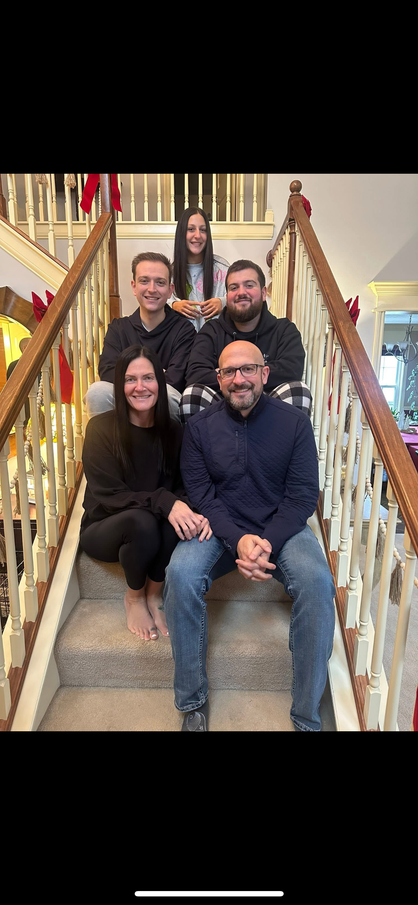

About Me
My name is Jake Waltrip and I am a student at the University of Iowa. I enjoy learning about business, technology, and analytics. In my free time I like working out, watching sports, spending time with friends and family, and hanging out with my dog Benji.
Photos


Facts About Me
- I attend the University of Iowa.
- I am interested in business analytics and technology.
- I enjoy going to the gym during the week.
- I like spending time with friends and family.
- I have a dog named Benji.
Hobbies
- Working out
- Watching sports
- Spending time with Benji
- Hanging out with friends
- Listening to music
Favorite Movies
- The Dark Knight
- Step Brothers
- Interstellar
- Remember the Titans
- 21 Jump Street
Favorite TV Shows
- Breaking Bad
- The Office
- Outer Banks
- Stranger Things
- Friday Night Lights
About Benji
- Benji is a German Shepherd and Australian Shepherd mix.
- He weighs around 70–75 pounds.
- He destroys most toys unless they are very strong.
- He is very laid back and sleeps a lot.
- He is a huge part of my life.